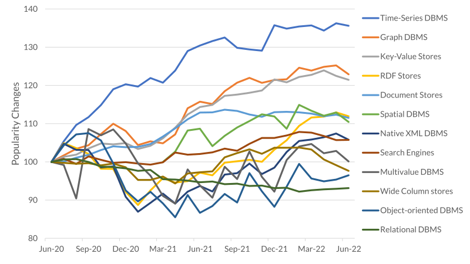

In this project, I use Power Query to clean and tranform data for visualizing by POWERBI. This dashboard includes summaries and reports to provide business performance in terms of sales, profit and other key performance indicators.

This dashboard allows Human Resource teams to track, analyze and report on HR KPIs. This way, HR teams can quickly find insights that will optimize workplace management and enhance employee performance.
Cleaning and preparing data for performing exploratory data analysis (EDA) using libraries such as Pandas, Numpy and Matplotlib.
Indicating key performance indicators of business performance and visualizing with Matplotlib.